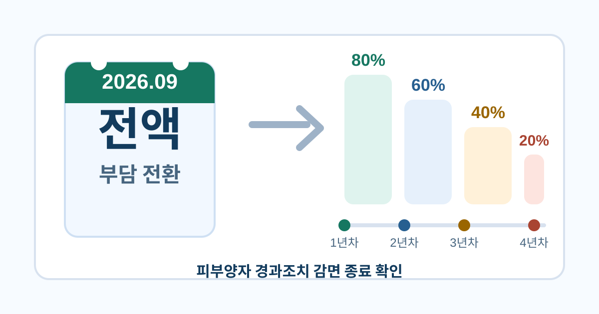

퇴사 후 건강보험 가이드
피부양자 감면 2026년 9월 종료
2022년 부과체계 개편으로 피부양자에서 지역가입자로 전환된 사람이라면 2026년 9월 이후 고지서에서 감면 종료 여부를 따로 확인해야 합니다.

- 2022년 9월 개편으로 연 소득 2,000만원 초과 피부양자는 지역가입자로 전환될 수 있게 되었습니다.
- 전환자에게는 80%, 60%, 40%, 20% 순서의 단계적 경감이 한시적으로 적용되어 왔습니다.
- 보건복지부 자료 기준으로 2026년 8월까지 마지막 20% 경감이 적용되고, 2026년 9월 이후에는 전액 부담 전환을 확인해야 합니다.
정보 이용 전 확인하세요
이 글은 2022년 9월 건강보험료 부과체계 개편 전후에 피부양자에서 지역가입자로 전환된 사람을 주된 대상으로 합니다. 퇴사 때문에 새로 지역가입자가 된 경우와는 원인이 다를 수 있으므로, 본인의 자격 변동 사유를 먼저 확인해야 합니다.
감면 종료 시점은 공단 고지서의 경감 항목, 자격득실확인서의 전환일, 세대별 산정 자료 반영 상태에 따라 체감 시점이 다를 수 있습니다. 정확한 종료월과 최종 보험료는 국민건강보험공단 확인을 우선하세요.
이 문제가 생기는 이유
2022년 9월 건강보험료 부과체계 2단계 개편에서는 피부양자 소득요건이 연 3,400만원 초과에서 연 2,000만원 초과로 강화되었습니다. 이 기준을 넘는 기존 피부양자는 더 이상 직장가입자 가족 밑에서 보험료를 내지 않는 상태로 남기 어렵고, 지역가입자로 전환되어 본인 세대 기준 보험료를 부담하게 됩니다.
제도가 갑자기 바뀌면 고령 은퇴자나 연금 수령자의 월 부담이 한 번에 커질 수 있습니다. 그래서 정부는 해당 전환자에게 4년 동안 보험료 일부를 줄여 주는 경과조치를 두었고, 경감률은 80%에서 시작해 60%, 40%, 20%로 낮아지는 방식으로 설계되었습니다.
문제는 이 경과조치가 끝나는 시점입니다. 보건복지부 설명자료는 20% 경감 구간을 2025년 11월부터 2026년 8월까지로 안내하므로, 2026년 9월 이후 고지서에서는 이전보다 금액이 커졌는지 따로 대조해야 합니다.
확인 방법
- 전환 통보 이력 확인2022년 9월 이후 피부양자 자격 상실 통보를 받았거나 자격득실확인서에 지역가입자 전환 기록이 있는지 확인합니다.
- 고지서의 경감 항목 보기최근 건강보험료 고지서에서 경감, 경과조치, 감면 관련 항목이 표시되는지 살펴봅니다.
- 현재 경감 구간 대조보건복지부 자료의 80%, 60%, 40%, 20% 일정과 본인의 전환 시점을 나란히 놓고 몇 번째 구간인지 확인합니다.
- 9월 이후 예상액 준비감면 전 산정액에 가까운 금액을 계산기로 미리 확인하고, 고지서가 오르면 실제 경감 종료 때문인지 다른 자료 반영 때문인지 비교합니다.
예시로 보는 판단 흐름
감면 전 지역보험료가 월 150,000원이라면 고지서에서는 약 120,000원 수준으로 보일 수 있습니다.
마지막 경감이 빠지면 같은 산정 자료 기준으로 월 30,000원 안팎의 부담 증가가 생길 수 있습니다.
예를 들어 2022년 10월에 피부양자에서 지역가입자로 전환된 은퇴자가 현재 마지막 20% 경감 구간에 있다면, 2026년 9월 이후 고지서에서 전액 부담에 가까운 금액을 볼 수 있습니다. 감면 전 산정액이 월 150,000원이었다면 20% 경감 중에는 약 120,000원, 경감 종료 후에는 약 150,000원으로 보는 식입니다.
다만 실제 고지액이 정확히 30,000원만 오르는 것은 아닙니다. 같은 달에 재산 과세표준, 연금소득, 금융소득, 장기요양보험료가 함께 반영되면 인상분이 경감 종료 효과보다 커 보일 수 있습니다.
확인 전에 준비할 자료
먼저 최근 건강보험료 고지서를 준비해 경감 항목과 감면 후 납부액을 확인하세요. 종이 고지서가 없다면 공단 홈페이지나 모바일 앱의 고지 내역에서 세대별 부과 금액과 경감 표시를 찾아볼 수 있습니다.
두 번째 자료는 피부양자 자격 상실 통보서 또는 건강보험 자격득실확인서입니다. 이 자료에 찍힌 전환일을 기준으로 2022년 개편에 따른 전환자인지, 퇴사나 다른 사유로 지역가입자가 된 것인지 구분해야 합니다.
- 최근 건강보험료 고지서
- 피부양자 자격 상실 통보서
- 건강보험 자격득실확인서
- 소득금액증명과 재산세 과세표준 자료
계산 결과를 볼 때 주의할 점
이 사이트의 계산기는 감면 전 기준에 가까운 지역가입자 예상액을 보여주는 참고 도구입니다. 현재 고지서에 경과조치 감면이 들어가 있다면 계산 결과가 실제 납부액보다 높아 보일 수 있습니다.
감면 종료 후에는 계산기 결과와 실제 고지액의 차이가 줄어들 수 있지만, 여전히 공단이 반영한 소득·재산 자료와 입력값이 다르면 금액은 달라집니다. 특히 연금소득과 금융소득은 반영 연도가 다를 수 있어 고지서의 산정 근거를 함께 확인하는 편이 안전합니다.
고지서 금액이 오른 이유를 볼 때는 감면 종료, 재산 자료 변경, 소득 자료 반영, 세대 구성 변화를 따로 나누어야 합니다.
건보계산기 독자 체크
피부양자 감면 종료를 볼 때 숫자보다 먼저 볼 3가지
2022년 개편 전환자인지 확인
피부양자 자격 상실 사유가 소득요건 강화 때문인지, 퇴사나 세대 변경 때문인지 먼저 분리합니다.
고지서의 경감 구간 읽기
현재 20% 경감 항목이 남아 있다면 다음 고지 주기에서 전액 부담 전환 여부를 집중해서 봅니다.
다른 선택지 재검토
소득과 재산이 줄었다면 피부양자 재신청 가능성을, 퇴사 직후라면 임의계속가입 가능성을 다시 비교합니다.
감면 종료 안내를 따로 체감하지 못한 채 고지서 금액만 조용히 오르면, 이번 인상이 경과조치 종료 때문인지 재산이나 소득 자료 반영 때문인지 헷갈릴 수 있습니다.
계산기로 연결하기
감면이 사라진 뒤의 부담을 미리 보려면 현재 고지서의 감면 후 납부액만 보지 말고, 소득과 재산 자료를 넣어 지역가입자 예상액을 다시 계산해 보세요.
퇴사 후 건강보험료 계산하기자주 묻는 질문
감면이 끝나면 보험료가 얼마나 오르나요?
마지막 20% 감면이 사라지는 구간이라면 감면 전 산정액 기준으로 그만큼 부담이 늘어날 수 있습니다. 다만 실제 인상액은 세대의 소득, 재산, 장기요양보험료, 자료 반영 시점에 따라 달라집니다.
지금이라도 피부양자로 돌아갈 수 있나요?
소득과 재산이 현재 피부양자 기준 안으로 다시 들어오면 재신청 검토는 가능합니다. 다만 2022년 개편 이후 기준 자체가 강화된 상태이므로 연간 소득, 재산 과세표준, 사업자등록 여부를 다시 계산해야 합니다.
공식 확인 경로
아래 자료를 기준으로 글의 계산 기준과 주의 문구를 검토했습니다. 개인별 금액과 자격 판정은 국민건강보험공단의 최신 자료 반영과 심사 결과가 우선합니다.
- 보건복지부: 2022년 9월 건강보험료 부과체계 2단계 개편피부양자 소득요건 강화, 지역가입자 전환, 4년간 경감률의 근거를 확인할 때 봅니다.
- 보건복지부: 건강보험 피부양자 보도 관련 설명자료80%, 60%, 40%, 20% 경감 구간과 2026년 8월까지의 마지막 경감 일정을 확인할 때 봅니다.
- 국민건강보험공단: 4대 보험료 모의계산개인별 입력값으로 공단 모의계산 결과를 다시 대조할 때 사용합니다.
- 건보계산기 공공데이터 출처사이트에서 활용하는 공공데이터와 공식 자료 목록을 모아 둔 페이지입니다.
작성: 건보계산기 편집팀 · 최종 검토: 2026-07-28